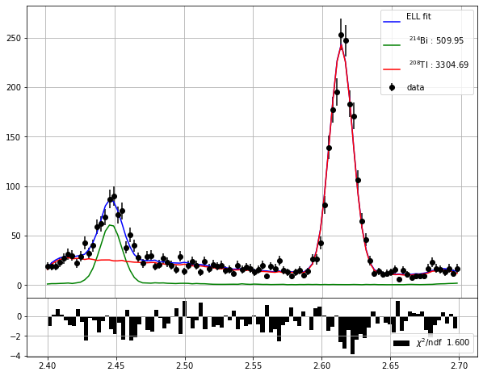
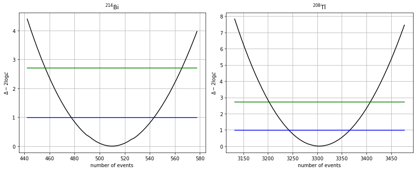

Uncertainties on the number of backgrounds events#
Objectives#
Estimate the uncertainties in the number of background events
Physics#
We estimate the parameter uncertainties using the log-likelihood scan.
We have estimated the parameters as the values where the \(-2\log\) likelihood has a minimum.
We estimate the uncertainties at the 68% confidence level using the values where the \(-2\log\) likelihood increases by one unit with respect to the minimum:
where \({\bf n} = \{n^{Bi}_b, n^{Tl}_b\}\) are the number of background events for Bi and Tl respectively.
To be precise, to compute the uncertainty on \(n^{Bi}_b\) we scan the likelihood along \(n^{Bi}_b\), but we estimate the other parameter \(\hat{n}^{Tl}_b(n^{Bi}_b)\) as the value that minimises the \(-2\log\) likelihood for a fixed \(n^{Bi}_b\).
Analysis#
%matplotlib inline
%load_ext autoreload
%autoreload 2
Importing modules#
import numpy as np
import tables as tb
import pandas as pd
import matplotlib.pyplot as plt
import scipy.stats as stats # statistics and many PDFs
#import scipy.optimize as optimize # Minimize functions
import warnings
warnings.filterwarnings('ignore')
import os, sys
from pathlib import Path
# Find the project root: honours FANAL_ROOT env-var, otherwise walks up from cwd
_env = os.environ.get('FANAL_ROOT') or os.environ.get('USCFANALDIR')
if _env and Path(_env, 'data').is_dir():
rootpath = str(Path(_env).resolve())
else:
rootpath = str(next(p for p in [Path.cwd(), *Path.cwd().parents]
if (p / 'data').is_dir() and (p / 'ana').is_dir()))
if rootpath not in sys.path:
sys.path.insert(0, rootpath)
print('Fanal root : ', rootpath)
add path to PYTHONPATH : /Users/hernando/work/docencia/master/Fisica_Particulas/USC-Fanal-v2/
import core.pltext as pltext # extensions for plotting histograms
import core.hfit as hfit # extension to fit histograms
import core.efit as efit # Fit Utilites - Includes Extend Likelihood Fit with composite PDFs
import core.utils as ut # generic utilities
import ana.fanal as fn # analysis functions specific to fanal
import ana.pltfanal as pltfn # plotting fanal functions
import collpars as collpars # collaboration specific parameters
pltext.style()
Parameters#
collaboration = collpars.collaboration
sel_erange = collpars.sel_erange
sel_eroi = collpars.sel_eroi
eff_Bi_blind = collpars.eff_Bi_blind
eff_Tl_blind = collpars.eff_Tl_blind
eff_Bi_E = collpars.eff_Bi_E
eff_Tl_E = collpars.eff_Tl_E
eff_Bi_RoI = collpars.eff_Bi_RoI
eff_Tl_RoI = collpars.eff_Tl_RoI
print('Collaboration : {:s}'.format(collaboration))
print('Energy range : ({:6.3f}, {:6.3f}) MeV'.format(*sel_erange))
print('RoI range : ({:6.3f}, {:6.3f}) MeV'.format(*sel_eroi))
print('Bi eff in E range : {:6.4f} %'.format(100.*eff_Bi_E))
print('Tl eff in E range : {:6.4f} %'.format(100.*eff_Tl_E))
print('Bi eff in RoI : {:6.4f} %'.format(100.*eff_Bi_RoI))
print('Tl eff in RoI : {:6.4f} %'.format(100.*eff_Tl_RoI))
Collaboration : new_gamma
Energy range : ( 2.400, 2.700) MeV
RoI range : ( 2.430, 2.480) MeV
Bi eff in E range : 1.8100 %
Tl eff in E range : 0.7280 %
Bi eff in RoI : 1.5300 %
Tl eff in RoI : 0.0195 %
# number of blind events
n_Bi_blind = eff_Bi_blind * collpars.n_Bi_total
n_Tl_blind = eff_Tl_blind * collpars.n_Tl_total
n_blind = [n_Bi_blind, n_Tl_blind]
print('Number of bkg events in blind data : Bi = {:6.2f}, Tl = {:6.2f}.'.format(*n_blind))
Number of bkg events in blind data : Bi = 509.95, Tl = 3304.70.
Access the data#
filename = '/data/fanal_' + collaboration + '.h5'
print('Data path and filename : ', rootpath + filename)
mcbi = pd.read_hdf(rootpath + filename, key = 'mc/bi214').fillna(0.) # MC Bi
mctl = pd.read_hdf(rootpath + filename, key = 'mc/tl208').fillna(0.) # MC Tl
data_blind = pd.read_hdf(rootpath + filename, key = 'data/blind').fillna(0.) # blind data
mc_samples = [mcbi, mctl]
sample_names = ['Bi', 'Tl']
sample_names_latex = [r'$^{214}$Bi', r'$^{208}$Tl']
Data path and filename : /Users/hernando/work/docencia/master/Fisica_Particulas/USC-Fanal-v2//data/fanal_new_gamma.h5
Re-do the fit to the blind data#
# get the blind mc samples
mcs_blind = [mc[fn.selection_blind(mc)] for mc in mc_samples]
varname = 'E'
refnames = (varname,)
refranges = (sel_erange,)
fit = fn.prepare_fit_ell(mcs_blind, n_blind, refnames, refranges)
result, enes, ell, _ = fit(data_blind)
n_est = result.x
print('Initial number of events :', *['{:6.2f}, '.format(ni) for ni in n_blind])
print('Estimated number of events :', *['{:6.2f}, '.format(ni) for ni in n_est])
# it also plots the histogram, the fit function, and the pdfs samples
pltfn.plot_fit_ell(enes, n_est, ell, parnames = sample_names_latex)
Initial number of events : 509.95, 3304.70,
Estimated number of events : 509.95, 3304.69,

Profile Likelihood Scan#
We compute the uncertainties using the log-likelihood scan.
The uncertainties on \(\mu\), in the Gaussian approximation, when there are two parameters \(\mu, \nu\), are defined as the \(\mu\) values where:
In the plot, the confidence intervals at 68% CL of a parameter correspond to the segment defined by the points where the \(\Delta -2 \log \mathcal{L} = 1\) line crosses the likelihood parabola.
nis, tmus = fn.tmu_scan(enes, n_est, ell, sizes = (3., 3.))
pltfn.plot_tmu_scan(nis, tmus, titles = sample_names_latex)

cl = 0.68
mucis = [efit.tmu_conf_int(ni, tmu, cl) for ni, tmu in zip(nis, tmus)]
for i, ci in enumerate(mucis):
print('Number of {:s} events CI at {:4.0f} % CL = ({:5.2f}, {:5.2f})'.format(sample_names[i], 100*cl, *ci))
Number of Bi events CI at 68 % CL = (478.15, 541.75)
Number of Tl events CI at 68 % CL = (3244.86, 3364.53)
for i, ci in enumerate(mucis):
print('Number of {:s} events CI at {:4.0f} % CL = {:5.2f} {:5.2f} +{:5.2f}'.format(sample_names[i], 100*cl,
result.x[i],
*(ci - result.x[i])))
Number of Bi events CI at 68 % CL = 509.95 -31.80 +31.80
Number of Tl events CI at 68 % CL = 3304.69 -59.83 +59.83
Computing the uncertainties in the number of Bkg#
Now the uncertainties in the number of background events in the RoI are:
# Compute the uncertainties on the number of background events in the RoI.
#
# From the profile likelihood scan, extract the uncertainty on n_blind:
# un_blind = [(ci[1] - ci[0]) / 2 for ci in mucis]
#
# Then propagate to the RoI using:
# sigma_n_k_RoI = (eff_k_RoI / eff_k_blind) * sigma_n_k_blind
# YOUR CODE HERE
Notation-to-code reference#
Math |
Python variable |
Description |
|---|---|---|
\(\sigma_{n^\mathrm{Bi}_b}\) |
|
Uncertainty on \(^{214}\)Bi blind event count |
\(\sigma_{n^\mathrm{Tl}_b}\) |
|
Uncertainty on \(^{208}\)Tl blind event count |
import ana.fanal_display as fdisp
# Check your values before writing to collpars.py
fdisp.display_collpars([
(r'\sigma_{n^\mathrm{' + sample + r'}_b}', 'un_' + sample + '_blind', un_blind[i], '.3f')
for i, sample in enumerate(sample_names)
])
Write Out#
Exercise: Compute the uncertainties on the total, blind, energy-range, and RoI efficiencies, and store those values in the collaboration parameter file.
write = True
collpar_filename = "collpars.py"
if (write):
of = open(collpar_filename, 'a')
for i, sample in enumerate(sample_names):
of.write('un_'+sample+'_blind = {:6.3f}'.format(un_blind[i])+'\n')
# of.write('un_'+sample+' = {:6.3f}'.format(un_total[i])+'\n')
# of.write('un_'+sample+'_E = {:6.3f}'.format(un_E[i]) +'\n')
# of.write('un_'+sample+'_RoI = {:6.3f}'.format(un_RoI[i]) +'\n')
of.close()